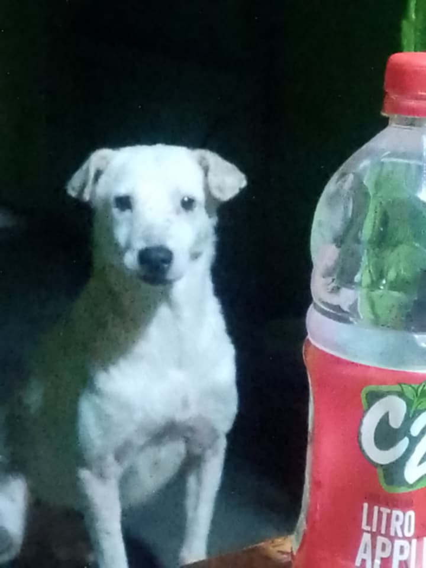
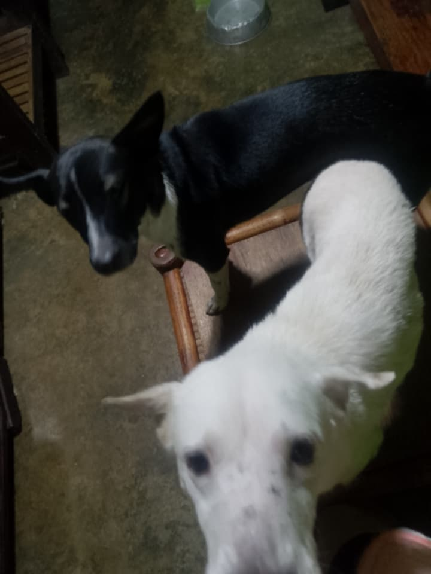

BSCS Student | 22 years old | San Mateo, Norzagaray, Bulacan
Hi! I'm Lorraine, a 22-year-old student pursuing a Bachelor of Science in Computer Science (BSCS). I live in San Mateo, Norzagaray, Bulacan. I am passionate about technology and eager to learn new programming languages, as well as building innovative solutions. When I'm not studying, I enjoy exploring different creative outlets, including dancing and digital design.
Whitey – My loyal dog! He's 7 years old and has a beautiful white coat. He loves to play and is always full of energy.
Lucky – My other dog, 2 years old, has a sleek black coat. He's a little more relaxed but loves to spend time with Whitey and me.
